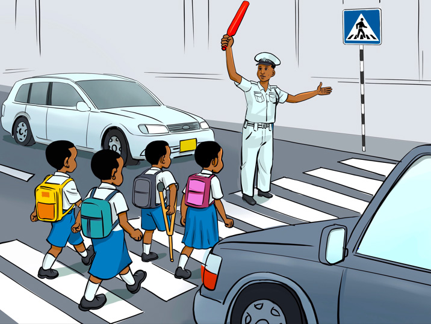

kulia tena kabla hatujavuka barabara. Tukiona hakuna gari, pikipiki wala bajaji, ndipo tuvuke. Alitueleza kuwa, tunapotembea barabarani, tutembee upande wa kulia ili tuwe salama sisi na vitu vyetu. Nilimuliza, kwa nini tunatakiwa kutembea upande wa kulia! Alijibu kwamba tukitembea upande wa kulia, tutaona magari yaliyo mbele yetu.
Pia, alitueleza kuwa, baadhi ya barabara zina alama za milia. Alama hizo ni za mistari myeupe. Watu wengine huziita alama za pundamilia. Zimewekwa kwa ajili ya watu wanaovuka barabara kwa miguu. Gari linapofika eneo hilo, linapaswa kusimama. Mgeni alitushauri kuwa, tukitaka kuvuka Barabara, tuombe msaada kwa watu wazima. Baada ya kujifunza darasani, mgeni alitutaka twende barabarani.
